内容要点
两套口诀都在讲「让画面好看且可信」，但分工不同：调色口诀偏色彩叙事与风格配方（光影染色、情绪色温、胶片/日系/赛博等）；修图口诀偏照片工作流与排障（先校色、磨皮边界、逆光/过曝/噪点、局部光影）。合在一起，可按「先修图底座 → 再调色叙事」执行。
光影逻辑 → 色彩情绪 → 实战细节 → 风格化 → 高阶心法。
基础 → 人像精修 → 风格化 → 实战排障 → 光影强化 → 心法总结。
共同主线：人物优先、光影先于颜色、肤色找橙色、背景让路、少滑块多观察。风格化参数（如青橙比、赛博 RGB）当配方起点，需按素材直方图微调。
一、调色 20 口诀
紫底图文笔记，面向「色彩怎么讲故事」。下列按原图五页全文收录。
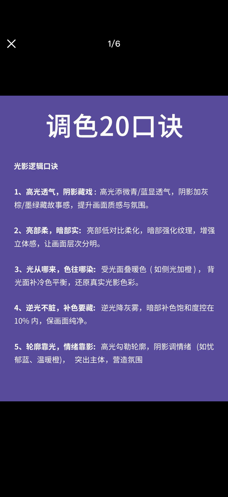
1）光影逻辑口诀
高光添微青/蓝显透气，阴影加灰棕/墨绿藏故事感，提升画面质感与氛围。
亮部低对比柔化，暗部强化纹理，增强立体感，让画面层次分明。
受光面叠暖色（如侧光加橙），背光面补冷色平衡，还原真实光影色彩。
逆光降灰雾，暗部补色饱和度控在10%内，保画面纯净。
高光勾勒轮廓，阴影调情绪（如忧郁蓝、温暖橙），突出主体，营造氛围。
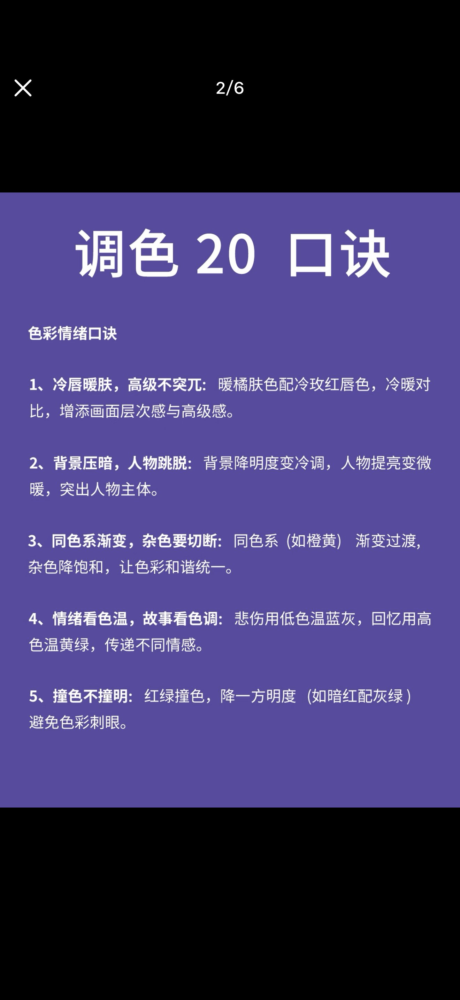
2）色彩情绪口诀
暖橘肤色配冷玫红唇色，冷暖对比，增添画面层次感与高级感。
背景降明度变冷调，人物提亮变微暖，突出人物主体。
同色系（如橙黄）渐变过渡，杂色降饱和，让色彩和谐统一。
悲伤用低色温蓝灰，回忆用高色温黄绿，传递不同情感。
红绿撞色，降一方明度（如暗红配灰绿）避免色彩刺眼。
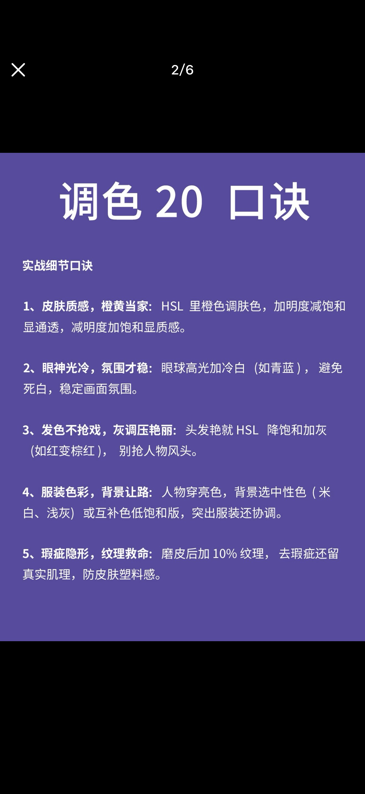
3）实战细节口诀
HSL 里橙色调肤色，加明度减饱和显通透，减明度加饱和显质感。
眼球高光加冷白（如青蓝），避免死白，稳定画面氛围。
头发艳就 HSL 降饱和加灰（如红变棕红），别抢人物风头。
人物穿亮色，背景选中性色（米白、浅灰）或互补色低饱和版，突出服装还协调。
磨皮后加 10% 纹理，去瑕疵还留真实肌理，防皮肤塑料感。
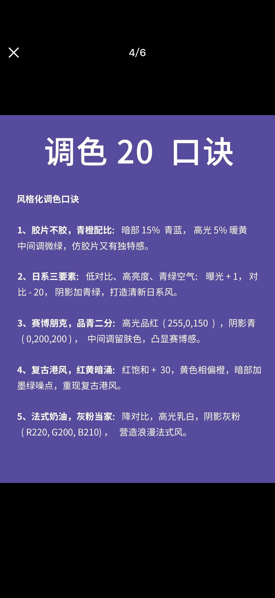
4）风格化调色口诀
暗部 15% 青蓝，高光 5% 暖黄，中间调微绿，仿胶片又有独特感。
曝光 +1，对比 -20，阴影加青绿，打造清新日系风。
高光品红 (255, 0, 150)，阴影青 (0, 200, 200)，中间调留肤色，凸显赛博感。
红饱和 +30，黄色相偏橙，暗部加墨绿噪点，重现复古港风。
降对比，高光乳白，阴影灰粉 (R220, G200, B210)，营造浪漫法式风。
| 风格 | 关键参数（原文） |
|---|---|
| 胶片感 | 暗部 15% 青蓝；高光 5% 暖黄；中间调微绿 |
| 日系 | 曝光 +1；对比 -20；阴影加青绿 |
| 赛博朋克 | 高光品红 RGB(255,0,150)；阴影青 RGB(0,200,200)；中间调留肤色 |
| 复古港风 | 红饱和 +30；黄色相偏橙；暗部墨绿噪点 |
| 法式奶油 | 降对比；高光乳白；阴影灰粉 RGB(220,200,210) |
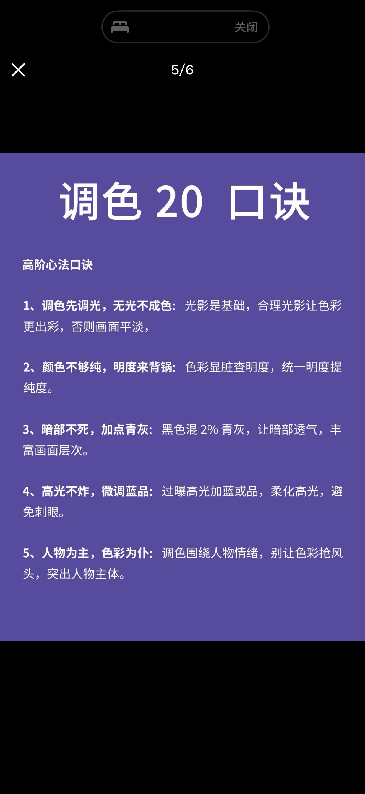
5）高阶心法口诀
光影是基础，合理光影让色彩更出彩，否则画面平淡。
色彩显脏查明度，统一明度提纯度。
黑色混 2% 青灰，让暗部透气，丰富画面层次。
过曝高光加蓝或品，柔化高光，避免刺眼。
调色围绕人物情绪，别让色彩抢风头，突出人物主体。
二、修图 20 口诀
青绿底图文笔记，面向「照片怎么修稳」。原笔记标 7 页，本批截图为 1/7–6/7，第 7 页缺失；下列为现有六页全文。
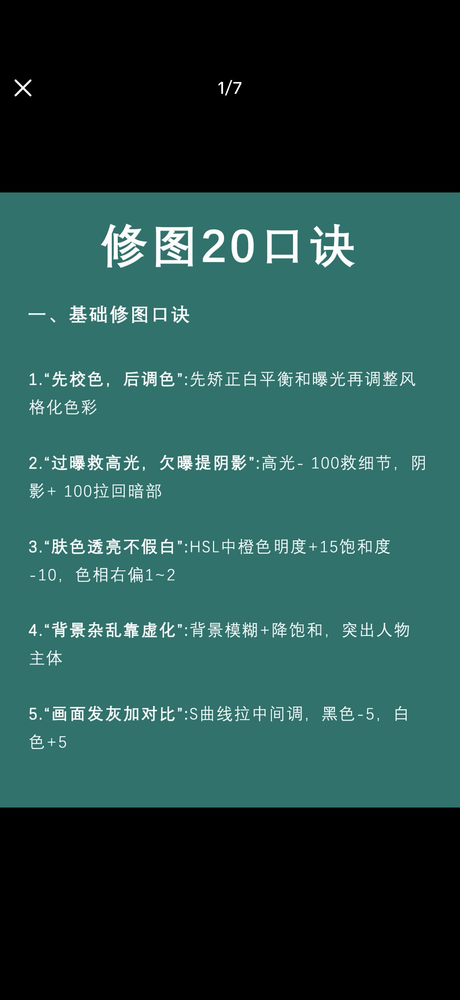
1）基础修图口诀
先矫正白平衡和曝光再调整风格化色彩。
高光 -100 救细节，阴影 +100 拉回暗部。
HSL 中橙色明度 +15、饱和度 -10，色相右偏 1~2。
背景模糊 + 降饱和，突出人物主体。
S 曲线拉中间调，黑色 -5，白色 +5。
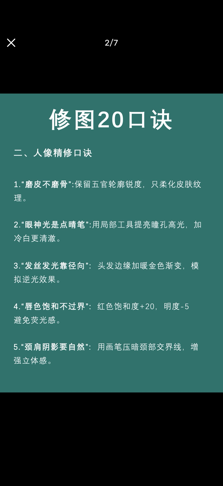
2）人像精修口诀
保留五官轮廓锐度，只柔化皮肤纹理。
用局部工具提亮瞳孔高光，加冷白更清澈。
头发边缘加暖金色渐变，模拟逆光效果。
红色饱和度 +20，明度 -5，避免荧光感。
用画笔压暗颈部交界线，增强立体感。
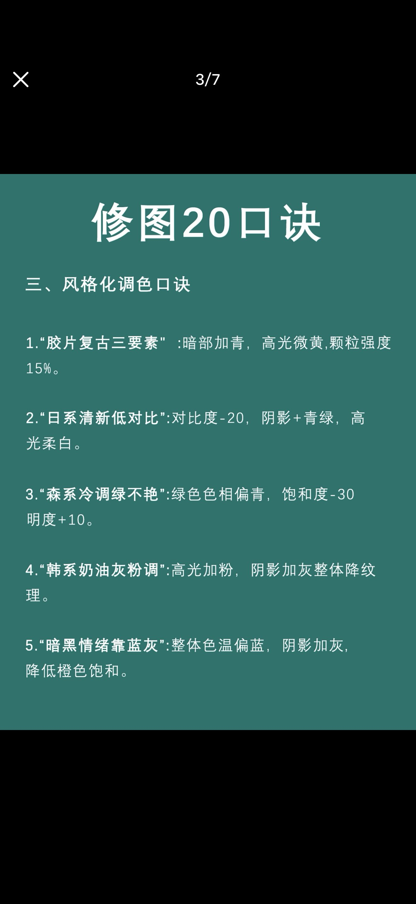
3）风格化调色口诀
暗部加青，高光微黄，颗粒强度 15%。
对比度 -20，阴影 +青绿，高光柔白。
绿色色相偏青，饱和度 -30，明度 +10。
高光加粉，阴影加灰，整体降纹理。
整体色温偏蓝，阴影加灰，降低橙色饱和。
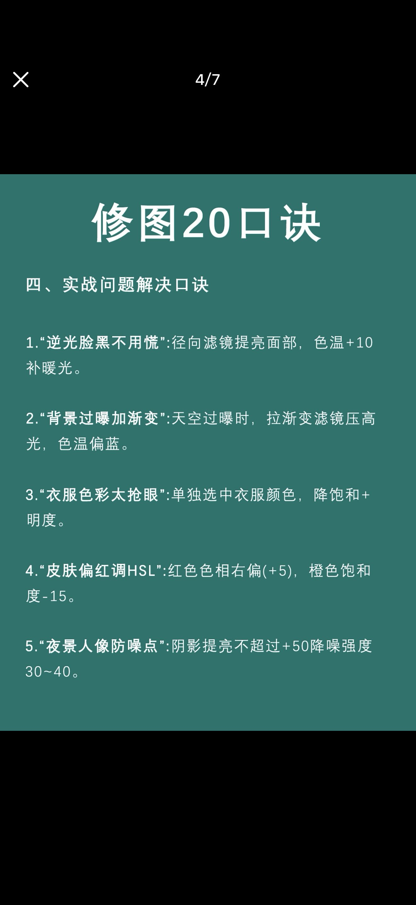
4）实战问题解决口诀
径向滤镜提亮面部，色温 +10 补暖光。
天空过曝时，拉渐变滤镜压高光，色温偏蓝。
单独选中衣服颜色，降饱和 + 明度。
红色色相右偏 (+5)，橙色饱和度 -15。
阴影提亮不超过 +50，降噪强度 30~40。
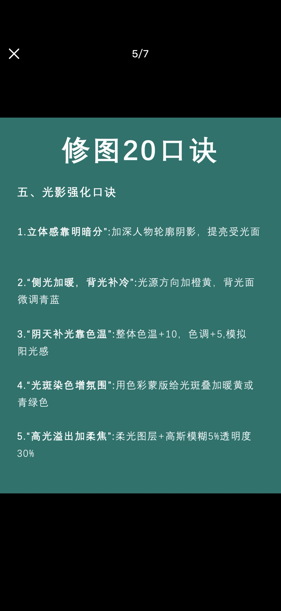
5）光影强化口诀
加深人物轮廓阴影，提亮受光面。
光源方向加橙黄，背光面微调青蓝。
整体色温 +10，色调 +5，模拟阳光感。
用色彩蒙版给光斑叠加暖黄或青绿色。
柔光图层 + 高斯模糊 5%，透明度 30%。
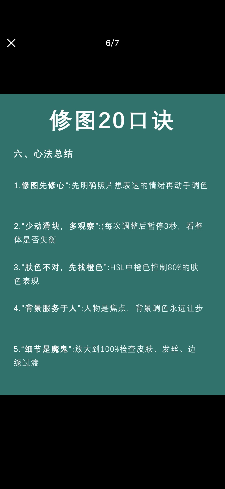
6）心法总结
先明确照片想表达的情绪再动手调色。
每次调整后暂停 3 秒，看整体是否失衡。
HSL 中橙色控制 80% 的肤色表现。
人物是焦点，背景调色永远让步。
放大到 100% 检查皮肤、发丝、边缘过渡。
三、两套口诀如何联用
建议顺序
- 修图底座：白平衡与曝光 → 磨皮不磨骨 → 眼神光/发丝/颈肩 → 逆光过曝等排障。
- 调色叙事：先调光影逻辑（透气/藏戏、光来色染）→ 再定情绪色温 → 最后套风格配方。
- 共同刹车：人物为主；肤色找橙色；背景让路；每次只动一小步并暂停观察。
重叠与差异
- 两套都有「胶片/日系」：调色篇给更细参数（青橙比、曝光对比）；修图篇更短、偏 Lightroom 滤镜语。
- 眼神光：调色强调「冷白/青蓝避死白」；修图强调「局部提亮瞳孔」——应同时做。
- 数值（±15、±20、RGB）是口诀起点，不同相机/肤色/软件色段会偏移。
| 目标 | 优先打开 |
|---|---|
| 废片曝光/白平衡 | 修图 · 基础 + 实战排障 |
| 人像皮肤与五官 | 修图 · 人像精修 + 调色 · 实战细节 |
| 要一种成片风格 | 调色 · 风格化（细）或 修图 · 风格化（快） |
| 画面脏/平/抢戏 | 调色 · 心法 + 修图 · 心法 |
四、原图附录
以下按文件名顺序再次列出全部 11 张源截图，便于对照原文措辞。